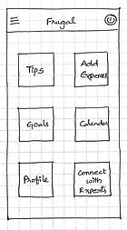

Case Study
Frugal — A Finance and Budgeting App for Everyday Users
THE CHALLENGE
During a casual conversation with family and friends about managing household expenses, I noticed a common theme — everyone wanted to save more, but no one felt confident about how to budget consistently. The discussion was not about spreadsheets or financial tools. It was about uncertainty — where to begin, how to structure expenses, and whether they were doing it right.
That moment revealed something deeper: people do not just need tracking tools, they need guidance. Frugal began as an exploration into how design could make budgeting feel simple, structured, and approachable for everyday users.
ROLE
I led the project end-to-end following the design thinking framework: empathizing with users through research, defining key problem areas, ideating potential solutions, creating low and high fidelity prototypes in Figma, conducting usability testing, and iterating based on feedback.
EARLY INSIGHTS
Through research and usability testing, I discovered that the challenge was not simply tracking expenses. It was helping users feel confident in how they managed their money. Participants were able to record transactions, but many hesitated when it came to applying budgeting principles consistently.
REFRAMING THE PROBLEM
Initially, the focus was improving expense tracking and visual clarity. Research showed the deeper problem was not data entry — it was confidence and consistency in financial decision making. Instead of designing just another budgeting tool, the direction shifted to a guided experience that helps users build habits over time.
DESIGN DIRECTION
The design approach focused on three guiding principles: simplicity, progressive guidance, and visual clarity. Rather than overwhelming users with data, the interface prioritizes essential actions, surfaces insights gradually, and integrates actionable tips directly within the workflow.
EXPLORATION
To explore solutions, I started with low-fidelity paper wireframes to quickly test layout structure, navigation patterns, and information hierarchy before digital refinement.




THE SOLUTION
Frugal transforms budgeting from a data-heavy task into a guided behavioral experience.
1. Guided learning over raw data — Instead of overwhelming users with financial metrics on the dashboard, primary entry points are tips and goals.
2. Purpose-driven saving — Savings goals connect financial behavior to meaningful outcomes, reinforcing consistency and motivation.
3. Clarity through design — A dark theme with structured cards and focused typography reduces cognitive load.


TESTING & ITERATION
To validate key user flows, I conducted an unmoderated usability study with five participants who actively manage personal or household finances. Participants were asked to record transactions, apply a budgeting tip, create a savings goal, and review spending statistics.
Key findings:
1) Users expected the menu icon to contain all primary features. Navigation was refined to align with common mental models.
2) Users were comfortable recording transactions once the flow was understood.
3) Users responded positively to structured guidance through tips and goals.
IMPACT
The refined navigation and structured experience improved task clarity and reduced hesitation during testing. Frugal reflects how research-driven design decisions and iteration can shape meaningful user experiences with intentional simplicity.